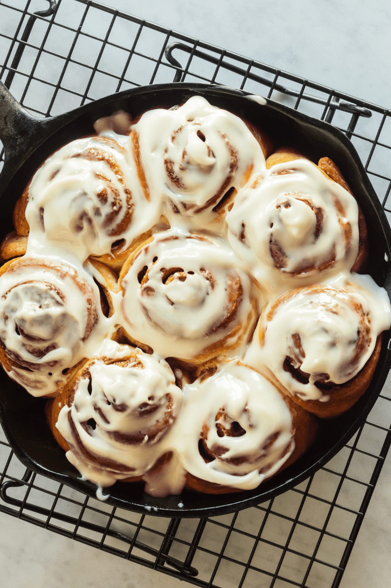

Cinnomon Rolls
Ingredients
- 4 cups (580g) all-purpose flour
- 1/2 cup (107g) granulated sugar
- 3/4 tsp (6g) fine sea salt
- 1/3 cup (84g) butter
- 1 cup (235g) lukewarm whole milk
- 21/4 tsp (7g ) instant yeast
- 3 Eggs
Filling:
- 1 cup (225g) brown sugar
- 2.5 Tbsp (17g) cinnamon
- 1/3 cup (84g) butter
Vanilla bean Cream Cheese Glaze:
- 4 oz (115g) cream cheese
- 3/4 (90g) cups powdered sugar
- 1 vanilla bean
- 3 Tbsp (45ml) whole milk
- In a stand mixer bowl, whisk together all-purpose flour, granulated sugar, and fine sea salt.
- Add in softened unsalted butter. Blend in using two forks.
- In a separate container, whisk together lukewarm whole milk and instant yeast.
- Using the dough hook attachment set on medium-low speed, add in yeast mixture, whole eggs, and egg yolk. Mix for 2-3 minutes.
- On a lightly floured work surface and knead for 30-60 seconds. Plop into a greased bowl and cover with plastic wrap, let rise for 90 minutes.
- Once dough is ready, mix together brown sugar, muscovado sugar, and cinnamon.
- Dump dough out onto a lightly floured surface flattening it into a large rectangle.
- Spread softened unsalted butter across the whole rectangle then sprinkle the cinnamon sugar evenly across the whole dough.
- Tightly roll from the bottom all the way to the top. Slice into 2” thick segments
- Grease a 9x13 baking dish, line the bottom of the pan the rolls and cover with plastic wrap once filled. Let rise at room temperature for 30-45 minutes.
- Bake in a 375F preheated oven for 15-20 minutes. Let cool in the container for 15 minutes.
- For the filling, beat together cream cheese then blend in powdered sugar until smooth. Whisk in whole milk until smooth then add in half scraped vanilla bean and whisk together.
- Drizzle the glaze on top of the cinnamon rolls and serve.